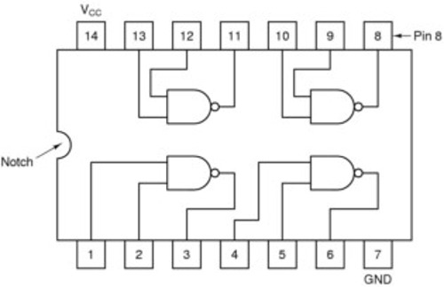

Combinational MSI Modules
Integrated Circuits (ICs, IC chips)
functioning assembly of various elements or "devices" (i.e., transistors, resistors, capacitors, etc.)
electrically connected and packaged to form a completely functioning circuit with a specific function -- forming logic gates
Logic Families
The types of logic devices are classified in "families", of which the most important are TTL and CMOS. The main families are:
TTL (Transistor-Transistor Logic): made of bipolar transistors
developed in the use of transistor switches for logical operations
logic level: 0 v ~ 0.8 v (logic-0) 2 v ~ 5 v (logic-1)
must be supplied with +5 volts
higher power assumption (3 ~ 4 mA/gate)
CMOS (Complementary Metal Oxide Semiconductor): made from MOSFETs
much lower in power requirements (1 mA)
operate with a wide range of supply voltages (typically 3 to 18 volts).
e.g., the 74C04 is the CMOS equivalent to the TTL 7404
extreme sensitivity to static electricity - they must be carefully protected from static discharges
ECL (Emitter Coupled Logic) for extremely high speeds
NMOS, PMOS for VLSI large scale integrated circuits
P- and N-channel Metal Oxide Semiconductors (PMOS and NMOS)
offer the advantage of higher component density than TTL chips.
They are sensitive to damage from electrical discharge.
Generations of IC Families:
ICs can be classified by complexity
|
Complexity |
Number of Transistors |
Number of Gates |
| SSI (Small-Scale Integration) | 1 - 102 | Fewer than 12 |
| MSI (Medium-Scale Integration) | 102 - 103 | 12 to 99 |
| LSI (Large-Scale Integration) | 103 - 105 | 100 to 9999 |
| VLSI (Very Large-Scale Integration) | 105 - 106 | 10,000 to 99,999 |
| ULSI (Ultra Large-Scale Integration) | 106 - 109 | 100,000 or more |
| GSI (Giga-Scale Integration) | > 109 |
Example: A SSI IC chip -- SN74S37 (Quadruple 2-Input Positive-NAND Buffers)
switching characteristics

Some Very Important/Useful ICs